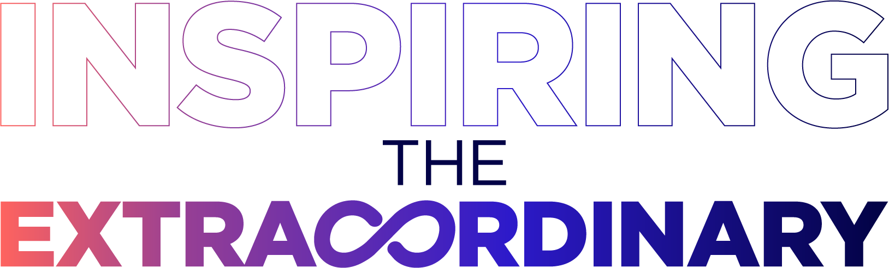

Clear
Light Blue + White, Purple focus. Default documents, explainers, onboarding.
One public home for Blackpaw's brand, language, interfaces, documents, identities, assets, and build decisions.
Blackpaw is an African business-systems and technology architecture company. The brand is calm competence: ambitious, honest, useful, and deeply accountable.
Light Blue is Blackpaw's primary field for everyday documents and communication. Purple creates focus. Blue signals action. Coral brings human energy. Dark Navy carries authority.
Urbanist is mandatory for every Blackpaw-built app. Use variable weights to create hierarchy; never introduce a second app typeface for decoration.
Select a mode according to the communication job, not personal taste. Clear is the default for business documents and ordinary product surfaces.
Light Blue + White, Purple focus. Default documents, explainers, onboarding.
Purple + Dark with restrained Coral. Governance, executive and high-stakes moments.
Coral + White with Purple anchors. Care, culture, celebration and support.
Blue + White. Product actions, technical material and operational clarity.
Controlled multi-colour expression. Launches, covers and rare memorable moments.
Blackpaw is the master company system. Hakiqa is a distinct product identity with Cyan, White, Orange, and Navy. Shared rigour and Urbanist connect the family; colours and character preserve recognition.
Architecture, systems, trust, delivery. Light Blue leads everyday communication.
Clear, supportive financial operations. Haki may guide and reassure, but must match the emotional state.
Extend shared foundations through tokens. New palettes and marks require explicit approval and manifest entries.
Interfaces should reduce thought, labour, and waiting. Complexity belongs in orchestration, defaults, validation, automation, and recovery—not in the customer's path.
Use the user's language and reveal only information needed now.
Default intelligently, prevent errors early, and keep choices finite.
Show what happened, what comes next, and how to recover.
Reusable React building blocks and states.
Browse componentsSemantic colour, typography, spacing, and identity contracts.
Browse tokensCanonical utility mapping for application teams.
Open presetBlackpaw documents begin in Light Blue and White with Purple focus. Choose a different expression only when the audience, risk, or emotional job requires it.
A tested, mode-aware starting point for proposals, reports, SOPs, and internal documents.
Open templateRecommended information architecture before visual styling.
Open skeletonMode selection, language and implementation notes.
Read guidanceUse the stable asset IDs in the manifest. Never redraw, recolour, distort, crop through, or assemble a substitute logo.

blackpaw.logo.lockup.colour
Download PNGblackpaw.logo.lockup.reversed
Download PNGhakiqa.logo.transparent
Download PNGBegin with the brand's intent, then consume its semantic implementation. A generated artefact is not compliant merely because it uses purple.
Foundations, identity colours, master assets, type policy, and canonical messaging change only through explicit brand-owner approval and a versioned repository update.
{kind=link}
{kind=link}
{kind=link}